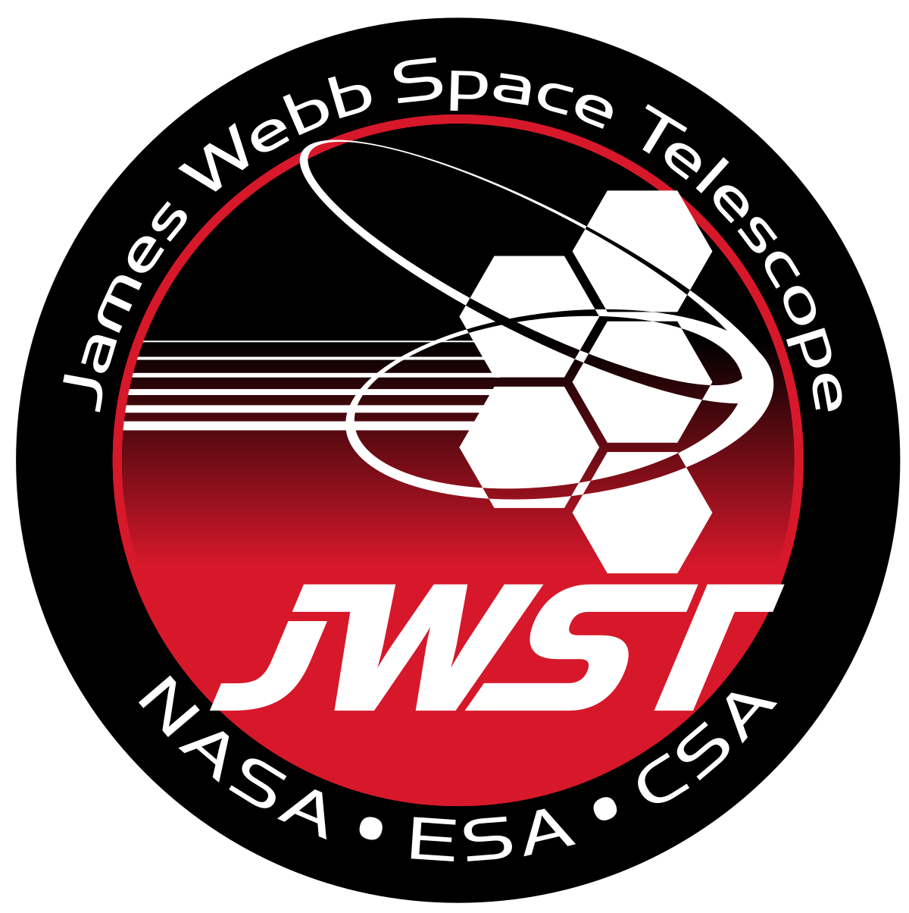

James Webb Space Telescope
The James Webb Space Telescope (JWST) is a revolutionary space observatory set to launch into orbit to study the universe in unprecedented detail. It is a collaborative project between NASA, the European Space Agency (ESA), and the Canadian Space Agency (CSA), named after NASA's second administrator, James E. Webb.
JWST's advanced technologies and large primary mirror will allow it to observe the universe in infrared wavelengths, revealing hidden phenomena such as distant galaxies, forming stars, and even potential signatures of life on exoplanets. With its capabilities, JWST aims to answer fundamental questions about the cosmos and provide insights into the origins of galaxies, stars, and planetary systems.
The telescope is equipped with cutting-edge instruments that will enable scientists to explore various aspects of the universe, from the formation of the first galaxies to the study of planetary systems and the search for habitable environments. JWST is poised to make significant contributions to our understanding of the universe and shape the future of astronomy for decades to come.
Preparation and Launch
The preparation and launch of the James Webb Space Telescope (JWST) represents a monumental feat of engineering and coordination. The telescope's journey began with meticulous planning, design, and construction involving NASA, the European Space Agency (ESA), and the Canadian Space Agency (CSA). Its intricate components were meticulously assembled and tested to withstand the harsh conditions of space.
The JWST was transported to its launch site at the Guiana Space Centre in French Guiana, where it was integrated with the Ariane 5 rocket. This intricate process required precision and attention to detail to ensure a successful launch. Finally, on December 25, 2021, the James Webb Space Telescope embarked on its remarkable journey into space, poised to revolutionize our understanding of the universe.

Mission Objectives
The primary mission objectives of the James Webb Space Telescope (JWST) are to peer deeper into the cosmos than ever before and to answer fundamental questions about the universe's origins and evolution. JWST aims to uncover the formation of galaxies, stars, and planets, shedding light on the conditions that give rise to habitable worlds. With its advanced infrared capabilities, the telescope will explore distant galaxies, study exoplanet atmospheres, and investigate the early universe. By capturing unprecedented images and data, JWST promises to revolutionize our understanding of cosmic history and provide insights into the building blocks of life and the cosmos.
Discoveries and Achievements
The James Webb Space Telescope (JWST) has already made significant strides in its mission to expand our understanding of the universe. Through its precise observations and advanced technology, JWST has provided unprecedented insights into the atmospheres of exoplanets, revealing details about their compositions and potential habitability. The telescope's deep-space imaging has uncovered galaxies formed just after the Big Bang, offering a glimpse into the universe's early stages. Additionally, JWST's infrared capabilities have enabled the study of star-forming regions and the identification of new stars within them. These discoveries pave the way for transformative breakthroughs in astronomy, offering fresh perspectives on the cosmos and its intricate workings.